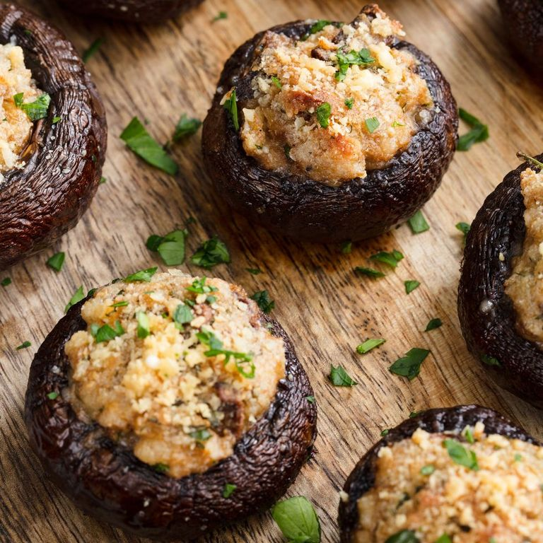

Stuffed Mushrooms

Description
Stuffed mushrooms are my favorite appetizer. The recipe comes from my mom.
Ingediants
- 1 Box of Mushrooms
- 1 Tube of Jimmy Dean's Sausage
- 1 Cup of Mayo
- 1 Bag of Parmasean Cheese
Steps
- Preheat oven to 400 degrees
- Prepare the mushrooms by removing their stems.
- In a large skillet, cook up the sausage and break into tiny pieces. Press any excess oil out of Sausage with a paper towl
- In a large bowl, Mix the Sausage with the Mayo and the Cheese
- Stuff the mushrooms with the mixture
- Cook in oven for 15 minutes or until done